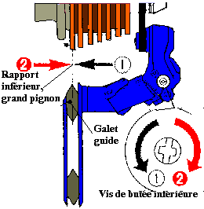
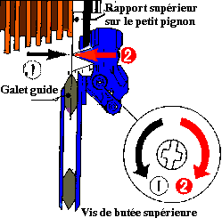
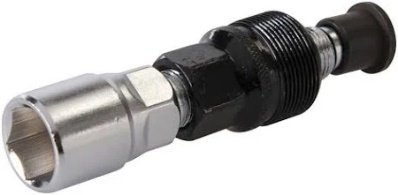
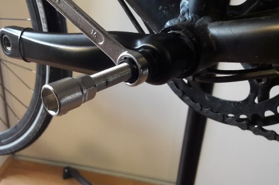
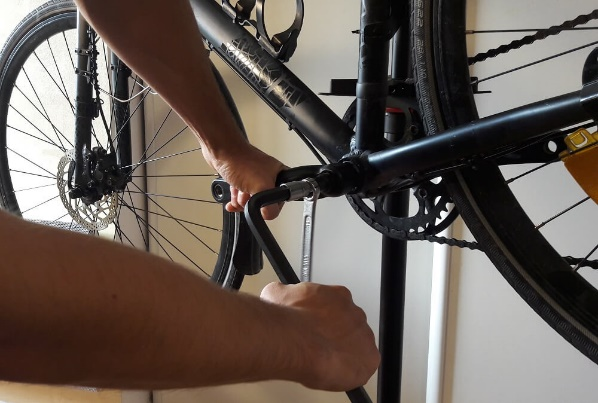

flowchart TD
A[Slacken gear cable] --> B[Set L limit — inner ring]
B --> C[Set H limit — outer ring]
C --> D[Set cage height ~2 mm above big ring]
D --> E[Clamp cable with barrel adjuster mid-range]
E --> F[Test all three chainrings]
F --> G{Clean shifts?}
G -->|No| H[Fine-tune barrel adjuster]
G -->|Yes| I[Done]
7 Gears
Derailleur adjustment, chain cleaning, and a chainring / rear-derailleur replacement workflow for a Shimano 105 triple 10-speed bike.
7.1 Front derailleur
Reference: Citycle front derailleur guide.
- Height and alignment — outer cage plate ~2 mm above the big chainring teeth; cage parallel to the chainrings.
- Limit screws — with the cable slack:
- L (low / inner) — loosen to move toward the frame (e.g. if it sits on the middle ring instead of the inner); tighten to move outward if the chain drops off the inner ring.
- H (high / outer) — sets the outer limit on the big ring.
- Cable tension — leave ~2 turns of barrel-adjuster range; if shifts to larger rings are sluggish, increase cable tension; if the chain overshoots, reduce tension.
7.2 Rear derailleur
Reference: VCMB rear derailleur guide.
- Confirm the derailleur hanger is straight and the cage aligns with the sprockets.
- H limit (high gear, smallest sprocket) — turning out (anti-clockwise) moves the upper jockey wheel outward; turning in moves it toward the frame.
- L limit (low gear, largest sprocket) — the opposite sense to H: turning in moves outward; turning out moves toward the frame. (The L screw is sometimes called the “high stop” in shop jargon — confusing, but common.)
- Cable tension — middle chainring, smallest sprocket; increase tension if upshifts are hesitant, decrease if the chain climbs too eagerly.
- B-tension screw — sets gap between upper jockey wheel and largest sprocket.


flowchart TD
A[Smallest sprocket — set H limit] --> B[Largest sprocket — set L limit]
B --> C[Set B-tension screw]
C --> D[Clamp cable on middle chainring / small sprocket]
D --> E[Index through all 10 sprockets]
E --> F{Skipping or noise?}
F -->|Yes| G[Barrel adjuster ± quarter turn]
F -->|No| H[Done]
7.3 Chain cleaning
- Degrease (drivetrain cleaner or solvent).
- Wash with warm water and washing-up liquid; remove the chain if heavily contaminated.
- Dry thoroughly, then lubricate sparingly on each link; wipe excess.
Sources:
flowchart LR A[Degrease] --> B[Agitate / brush] B --> C[Rinse & dry] C --> D[Apply lube drop per link] D --> E[Wipe excess] E --> F[Rotate through gears]
7.4 How to change the mechanical components
7.4.1 Pedal removal first
The left pedal sits on the opposite side of the bottom bracket shell (i.e. on your left when you mount the bike).
{kind=link}
- Fitting: the right pedal tightens clockwise; the left pedal tightens anti-clockwise.
- Removal: the right pedal loosens anti-clockwise (the opposite of normal right-hand threads).
flowchart LR R[Right crank] -->|tighten| CW1[Clockwise] R -->|loosen| ACW1[Anti-clockwise] L[Left crank] -->|tighten| ACW2[Anti-clockwise] L -->|loosen| CW2[Clockwise]
7.4.2 Crankset removal second
Traditional square-taper or external-bearing systems use a crank extractor; FSA 30 mm self-extracting axles use a 10 mm hex in the central bolt instead — see Section 7.4.3 for sprocket clusters, and the self-extracting procedure below for the FSA crank.
For extractor-type cranks:
- Remove the chain.
- Remove the retaining bolt at the base of the crank.
- Fit the crank extractor; if stiff, back the extractor off slightly and tap with a mallet.
- Tighten the extractor with a 14 mm spanner until the crank releases. Repeat on both sides, turning anti-clockwise.



7.4.2.1 Standard crankset removal
flowchart TD
A[Remove pedals] --> B[Remove chain from chainrings]
B --> C[Undo crank retaining bolt]
C --> D[Thread in crank extractor]
D --> E[Tighten extractor body against crank]
E --> F[Turn extractor bolt anti-clockwise]
F --> G{Crank released?}
G -->|No| E
G -->|Yes| H[Repeat other side]
7.4.2.2 Self-extracting crankset removal with a 10 mm hex key
In Figure 7.10, the procedure for removing a crankset with a self-extracting axle (10 mm hex key) is shown.
For the manufacturer’s PDF, refer to Figure 7.11.
7.4.3 Cassette or freewheel
Two incompatible rear clusters exist. Both let you coast, but they fix to the hub differently and need different removers. Summary from Le Cyclo — freewheel and cassette.
| Freewheel (roue libre) | Cassette | |
|---|---|---|
| Hub | Threaded | Splined freehub body |
| Ratchet | Inside the cluster | Inside the hub |
| Speeds | 1–8 (never more than 8) | 7–12 |
| Typical bikes | Pre-1980s, city, BMX, singlespeed | Modern road and mountain |
| Remover | Freewheel remover (démonte-roue-libre) | Shimano HG lockring tool |
| Hold still with | Chain whip | Chain whip |
Visual check (wheel off, turn the sprockets by hand):
- Freewheel: a ring between the axle and the smallest sprocket stays still while the sprockets spin. The cluster is one block.
- Cassette: the whole stack turns together; nothing stays fixed next to the axle. Nine sprockets or more is always a cassette.
flowchart TD
A[Rear wheel off] --> B{More than 8 sprockets?}
B -->|Yes| C[Cassette]
B -->|No| D[Spin the sprockets]
D --> E{Fixed ring next to the axle?}
E -->|Yes — inner stays still| F[Threaded freewheel]
E -->|No — whole stack turns| C
7.4.3.1 Removing a cassette
The sprockets slide off the freehub body after the lockring is undone. The Decathlon 900 box already has the whip and the HG lockring tool.
- Remove the rear wheel and the quick-release or thru-axle.
- Wrap the on the largest sprocket to stop the cassette turning.
- Seat the in the lockring.
- Turn the lockring anti-clockwise.
- Slide the sprockets off the splines (note the wider spline gap — it keys the orientation).
- Clean the freehub body before refitting; tighten the new lockring clockwise.


flowchart LR A[Remove rear wheel] --> B[Remove quick-release / thru-axle] B --> C[Wrap chain whip on largest sprocket] C --> D[Insert HG lockring tool] D --> E[Turn lockring anti-clockwise] E --> F[Slide cassette off splines] F --> G[Clean freehub body]
7.4.3.2 Removing a freewheel
The whole body unscrews from the hub. A cassette lockring tool will not fit: you need a freewheel remover whose splines (or two prongs) match that brand.
- Same as above: wheel off, chain whip on the largest sprocket.
- Seat the freewheel remover fully in the centre.
- Turn anti-clockwise. The first break of thread is often very tight (pedalling has been tightening it for years).
- Once loose, unscrew the whole body by hand.
Refit by starting the thread by hand, clockwise, square to the hub, then finish with the remover or by pedalling. Cross-threading ruins the hub.
flowchart LR A[Remove rear wheel] --> B[Chain whip on large sprocket] B --> C[Seat freewheel remover] C --> D[Turn anti-clockwise] D --> E[Unscrew whole body]
7.5 Summary infographic
flowchart TD A[Chain on small ring + small sprocket] --> B[Remove chain] B --> C[Remove rear derailleur — note cable clamp only] C --> D[Mount new RD — leave cable detached] D --> E[Set H limit before cabling] E --> F[Remove crank with 10 mm hex — self-extracting FSA] F --> G[Photograph washer stack] G --> H[Swap 52/39/30 chainrings on bench] H --> I[Light grease on bolt threads] I --> J[Reinstall crank — torque 38–41 Nm] J --> K[Adjust rear derailleur cable + limits + B screw] K --> L[Fit new 10-speed chain to old length] L --> M[Static shifts then test ride]
Step-by-step:
- Remove the chain — quick-link pliers if fitted; otherwise use the chain tool from the 900 box.
- Remove the rear derailleur — slacken the cable pinch bolt only; no need to pull the inner wire from the shifter. Unbolt from the hanger (8–10 Nm on refit).
- Set the H limit on the new derailleur before attaching the cable.
- Remove the FSA crank — left side: 10 mm hex in the central self-extracting bolt, turn anti-clockwise. Do not remove the outer retaining ring; it is part of the extraction mechanism.
- Photograph washers — especially the wave washer; keep the BB30 bearings in the frame.
- Replace chainrings on the bench — use the chainring nut tool; orient markings and anti-drop pin on the outer ring behind the crank arm.
- Grease bolt threads lightly — follow torque specs supplied with the new rings.
- Reinstall the crank — restore washers in the original order; torque the 30 mm axle bolt to 38–41 Nm with a calibrated wrench.
- Adjust the rear derailleur — H limit, cable tension, L limit, B-tension.
- Fit a new 10-speed chain — match the old link count if the previous length was correct; respect directional markings.
- Test — the front derailleur should need little change if tooth counts stay 52/39/30.
7.6 Zoom on Ultegra gear shift
The right-hand lever indexes the rear derailleur; the left indexes the front. These notes cover a 10-speed Shimano lever of the same generation as the 105 triple above. Bar-clamp and cable work overlap with Section 6.3.
{kind=link}
Figure 7.17 is a workshop teardown of a right-hand 105 ST-5600 FlightDeck lever. The ratchet and pawls are the same 10-speed STI architecture as Ultegra of that era. Open the lever only if indexing feels gritty after a cable change:
- Keep the tiny spacers, star washer, and square lock washer together.
- Clean grit with solvent; do not bend the fine pawl spring.
- Relubricate the ratchet with a light oil film. Grease packs the pawls and makes shifts sticky.
Refit the hood and test every click plus brake return before wrapping the bar.
{kind=link}
Figure 7.18 is the parts legend and install sequence. Mount the lever before cabling:
- Peel the hood back to expose the clamp band.
- Align both levers on the drops, then torque the clamp bolt to 6–8 Nm. Check that the body sits square on the bar before the final tighten.
- Fit the brake inner first (1.6 mm inner, 5 mm outer), with the nipple fully seated in the lever.
- Shift to the smallest sprocket, grease the pawl area with Shimano SIS SP41, then fit the gear inner (1.2 mm inner, 4 mm outer) into the cable hook unit.
{kind=link}
Figure 7.19 is a compact sheet of the same three blocks: clamp, brake cable, gear cable. Use it at the bench as a checklist; use Figure 7.18 when a part name or seating diagram is unclear.
Before wrapping the bar, confirm:
- both levers travel fully, with clean upshifts and downshifts;
- inners run freely and every outer-casing end is seated;
- the hoods sit neatly and the levers are square to each other.
See Figure 7.17, Figure 7.18, Figure 7.19 for the teardown, the exploded install diagram, and the compact workshop sheet.